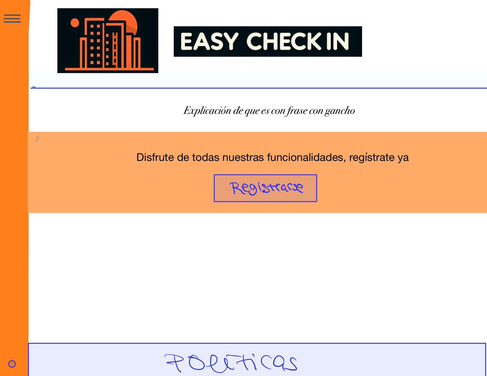
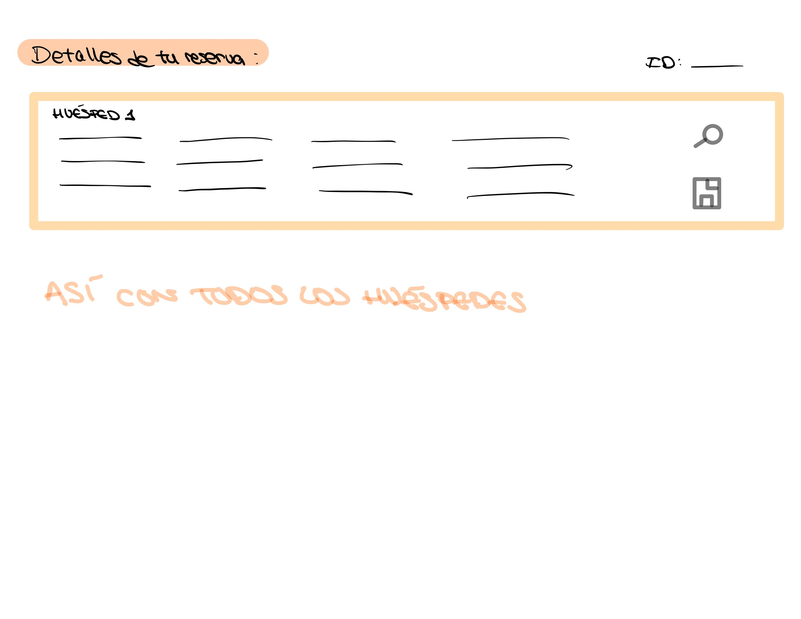
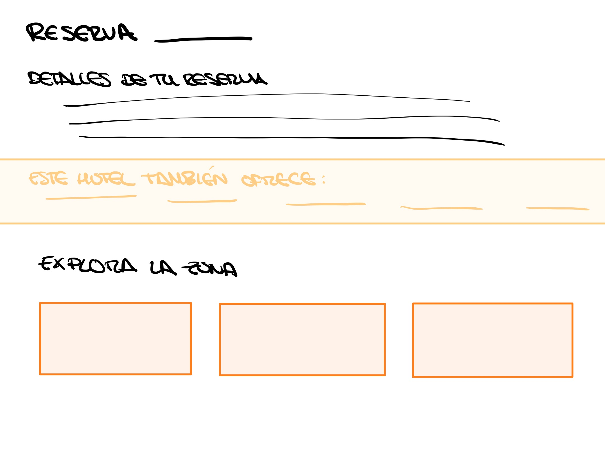
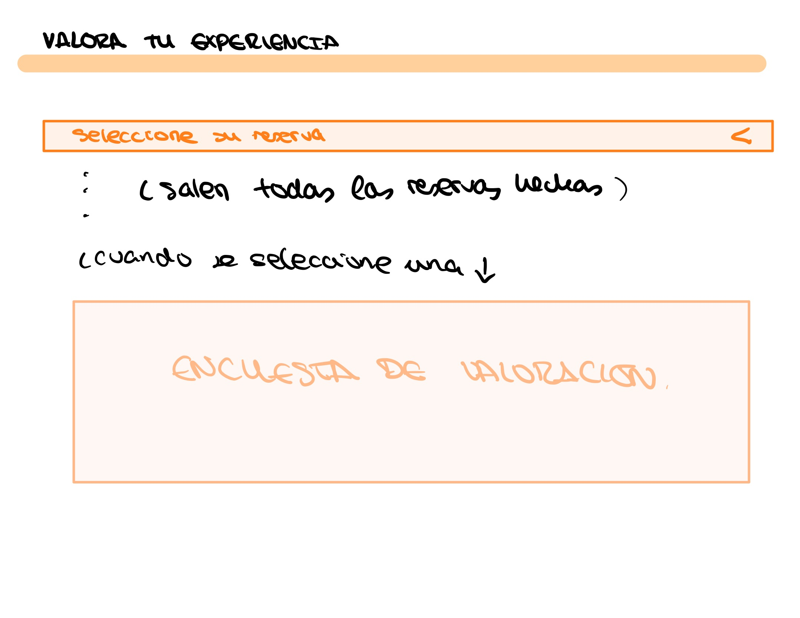

BOCETOS DE LA WEB
Página Principal

La página principal muestra un diseño limpio con una barra de navegación superior y un banner de bienvenida. Se incluyen accesos rápidos a las principales secciones.
Los huéspedes completan su check-in desde cualquier dispositivo, antes de llegar, ingresando sus datos personales y detalles de la estancia. La información se almacena de forma segura para agilizar futuras visitas
Lista de Reservas

Los administradores acceden a una lista completa de huéspedes registrados,
con opciones para agregar notas internas sobre preferencias o solicitudes especiales.
Simplifica la asignación de habitaciones y la gestión de reservas.
Historial de Reservas

Los huéspedes pueden revisar su historial de estancias anteriores,facilitando reservas recurrentes.
Los administradores generan reportes de ocupación, tendencias y actividades, permitiendo una toma de decisiones informada
Página de Servicios

Los huéspedes acceden a un portal con detalles de su reserva,
servicios contratados y opciones para agregar extras (desayuno, parking, etc.).
Recomendaciones locales y actividades personalizadas para enriquecer su experiencia.
Página de Valoración

El usuario puede valorar las facilidades que le ofrece el hotel así como la calidad de estas tras la estancia